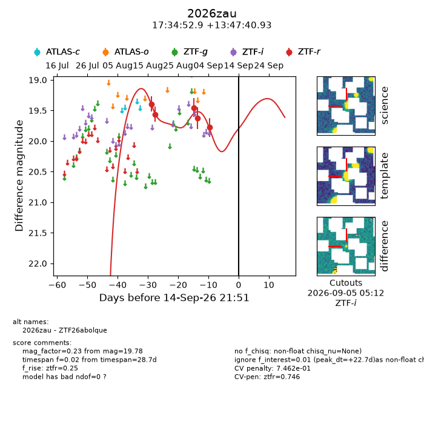
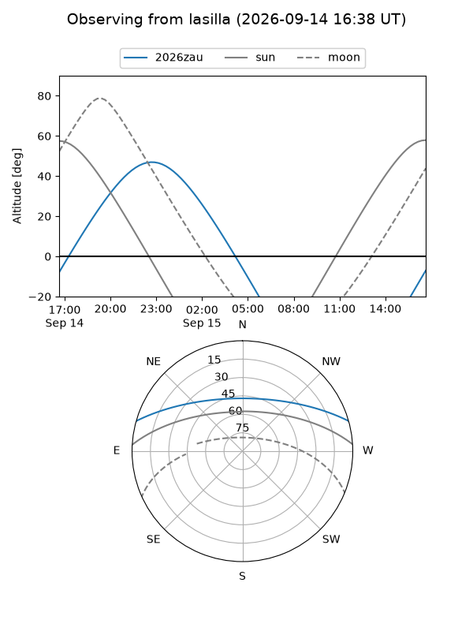
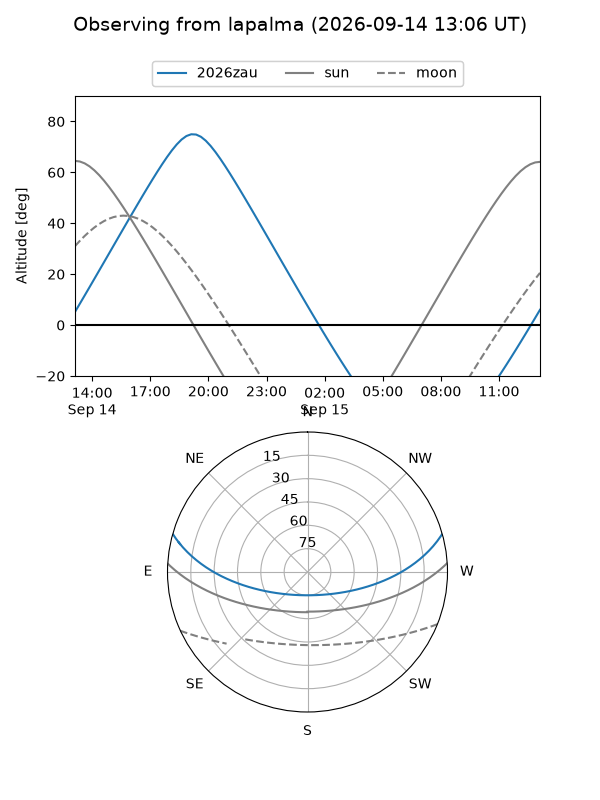
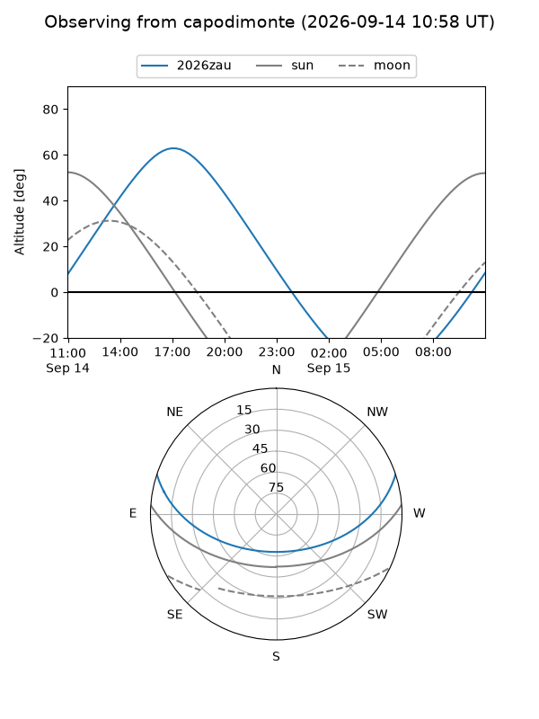
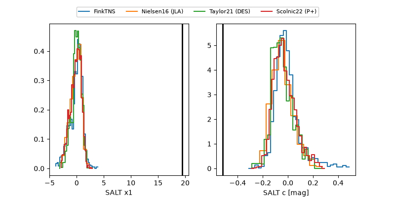

2026zau
Target 2026zau at 2026-09-15 09:10
Aliases and brokers:
FINK-ZTF: ztf.fink-portal.org/ZTF26abolque
Lasair-ZTF: lasair-ztf.lsst.ac.uk/objects/ZTF26abolque
ALeRCE-ZTF: alerce.online/object/ZTF26abolque
YSE-PZ: ziggy.ucolick.org/yse/transient_detail/2026zau
TNS name: wis-tns.org/object/2026zau
Direct TNS query: direct search
alt names
ZTF26abolque (ztf,fink_ztf)
2026zau (tns,yse)
Coordinates:
equatorial (ra, dec) = 263.7202,+13.79470
equatorial (HMS+DMS) = 17:34:52.85,+13:47:40.93
galactic (l, b) = (37.1100,+23.08562)
Flags:
TNS type: nan
peak dt: +23.2
likely cv: !!
Photometry:
last ztfr=19.78
5 ztfr detections
Lightcurve

Visibility



Additional plots
